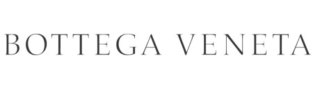
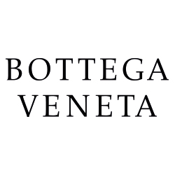

홈 > 브랜드 매거진 > 보테가 베네타
보테가 베네타
보테가 베네타는 이탈리아의 패션·럭셔리 브랜드로, 소재, 실루엣, 로고, 컬렉션 운영이 취향과 지위 신호를 만드는 영역입니다.
산업 분야 패션·럭셔리 · 공개 등급 자료 기반 · 브랜드 평가 4.3 ★

한눈에 보는 브랜드
보테가 베네타는 이탈리아 기반의 패션·럭셔리 브랜드입니다. 소재, 실루엣, 로고, 컬렉션 운영이 취향과 지위 신호를 만드는 영역으로 분류되며, 브랜드명과 업종, 운영 국가, 공개 로고 여부를 함께 보며 사전 항목의 기본 맥락을 확인할 수 있습니다.
브랜드 관점
보테가 베네타 항목은 단순한 이름 목록이 아니라 패션·럭셔리 시장 안에서 어떤 역할을 하는지 읽기 위한 기준점입니다. 제품·서비스 범위, 유통 방식, 시각 아이덴티티, 시장 포지션을 함께 비교하면 같은 산업의 다른 브랜드와 차이가 선명해집니다.
시작과 성장
미켈레 타데이와 렌초 첸자로가 1966년에 창립한 이탈리아의 럭셔리 패션 브랜드로, 남성 및 여성의 레디 투 웨어 · 가방 · 신발 · 가죽 소품 · 주얼리 · 파인주얼리 · 아이웨어 · 실크 액세서리 · 향수 등 제품 등을 제작 · 판매함.
브랜드 아이덴티티
보테가 베네타의 아이덴티티는 브랜드명, 로고 사용 여부, 업종 언어, 국가적 배경을 중심으로 정리됩니다. 대표 로고 자산이 연결되어 있어 시각 식별자를 함께 검토할 수 있습니다.
제품과 서비스
대표 제품과 서비스 정보는 편집 검수 후 공개됩니다.
현재 상태
타임라인
BI/CI 변천사

BI/CI 아카이브BI/CI 아카이브함께 읽을 브랜드
 패션·럭셔리 · 편집 검수구찌
패션·럭셔리 · 편집 검수구찌구찌는 이탈리아의 패션·럭셔리 브랜드로, 소재, 실루엣, 로고, 컬렉션 운영이 취향과 지위 신호를 만드는 영역입니다.
 패션·럭셔리 · 편집 검수어그
패션·럭셔리 · 편집 검수어그어그는 이탈리아의 패션·럭셔리 브랜드로, 소재, 실루엣, 로고, 컬렉션 운영이 취향과 지위 신호를 만드는 영역입니다.
The Society Shop는 네덜란드의 패션·럭셔리 브랜드로, 소재, 실루엣, 로고, 컬렉션 운영이 취향과 지위 신호를 만드는 영역입니다.
The Sting는 네덜란드의 패션·럭셔리 브랜드로, 소재, 실루엣, 로고, 컬렉션 운영이 취향과 지위 신호를 만드는 영역입니다.
 패션·럭셔리 · 편집 검수까르띠에
패션·럭셔리 · 편집 검수까르띠에까르띠에는 패션·럭셔리 브랜드로, 소재, 실루엣, 로고, 컬렉션 운영이 취향과 지위 신호를 만드는 영역입니다.
 패션·럭셔리 · 편집 검수누디진
패션·럭셔리 · 편집 검수누디진누디진는 스웨덴의 패션·럭셔리 브랜드로, 소재, 실루엣, 로고, 컬렉션 운영이 취향과 지위 신호를 만드는 영역입니다.
 패션·럭셔리 · 편집 검수랄프 로렌
패션·럭셔리 · 편집 검수랄프 로렌랄프 로렌는 패션·럭셔리 브랜드로, 소재, 실루엣, 로고, 컬렉션 운영이 취향과 지위 신호를 만드는 영역입니다.
 패션·럭셔리 · 편집 검수롤렉스
패션·럭셔리 · 편집 검수롤렉스롤렉스는 스위스의 패션·럭셔리 브랜드로, 소재, 실루엣, 로고, 컬렉션 운영이 취향과 지위 신호를 만드는 영역입니다.